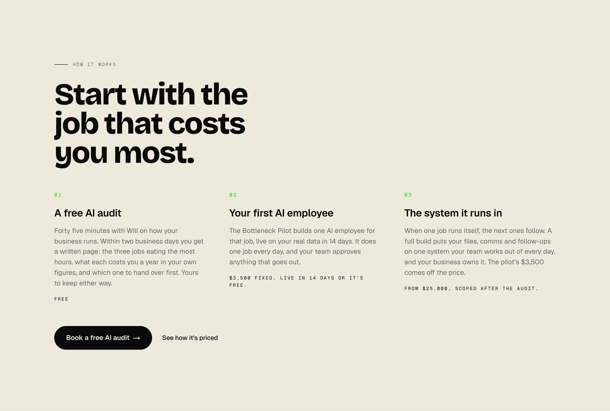
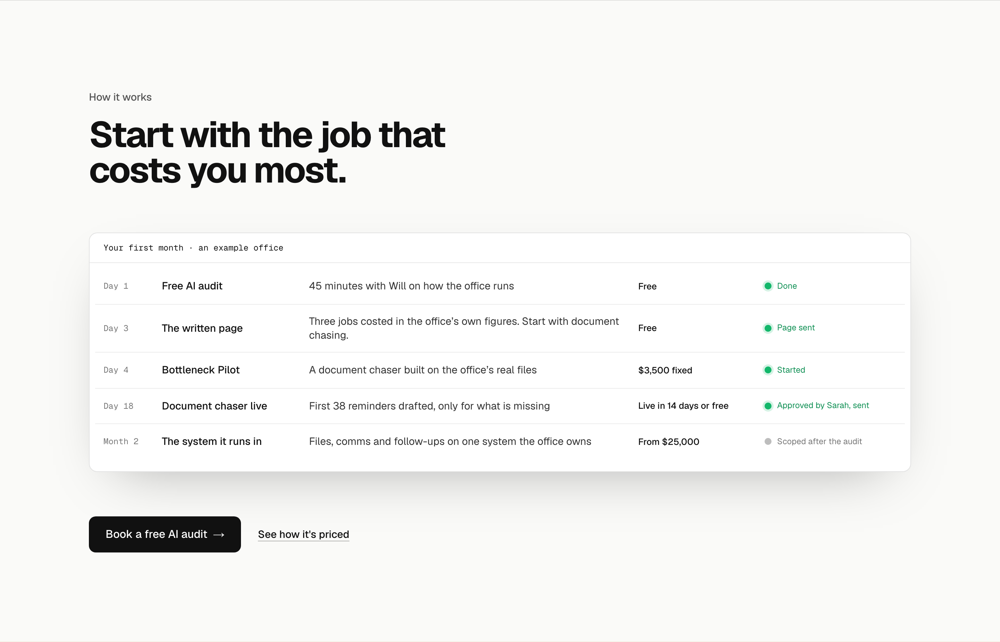
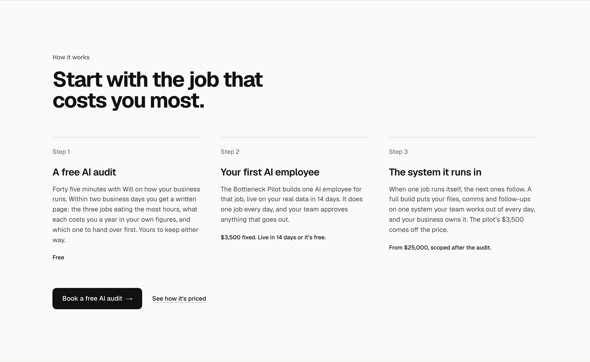
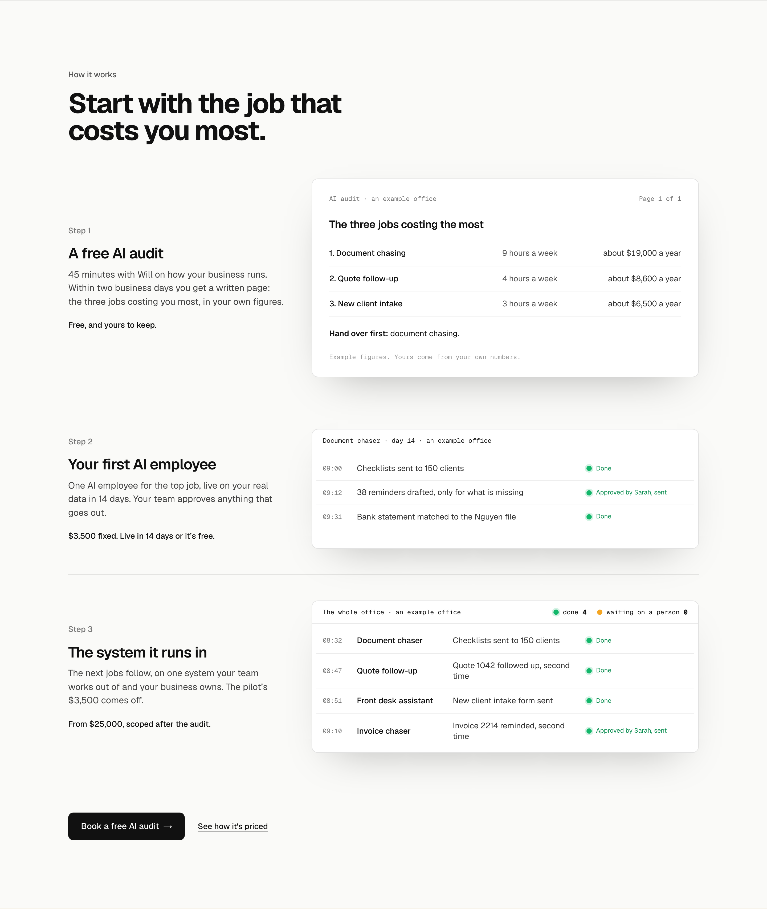

Homepage: How it works
The section under the hero, each option drawn in place on the real homepage at 1440 wide and shown whole, in its finished state. The heading, the audit button and the pricing link are the same in all three. The running version is the lab page.
TodayThe May register: cream ground, Bricolage heading, three columns, 971px tall. 173 words of reading. For comparison, not an option.

A. The first month as a boardOne product window: an example office’s first month, from the audit on day 1 to the first AI employee live on day 18, with the system queued for month 2 and the price beside each step. The shortest section (924px against today’s 971px) and it runs like the hero, but it is a second board straight under the first. 21 words of reading outside the window.

B. Three steps, set plainToday’s three steps and words, moved onto the paper ground and Geist. Nothing moves. The safest change, and the most reading: 176 words.

C. Each step shows what you getEach step beside the thing it produces: the audit’s written page, the first AI employee running, the whole office’s board. It shows the product at every step and cuts the reading to 131 words, though the windows add 156 of their own, and it is the tallest section (1705px). Recommended.
